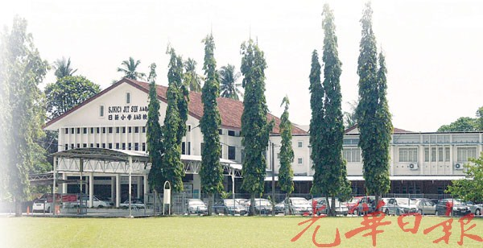

2020 (Present)
UNIVERSITY OF TECHNOLOGY MARA, CAMPUS MACHANG, KELANTAN
- Bachelor Degree in Office Systems Management
Bukit Ilmu
18500 Machang
Kelantan
Malaysia

Let's get to know me better.
Skills are common. Talent is rare.
“Nothing ever becomes real 'til it is experienced.”
Education is the passport to the future, for tomorrow belongs to those who prepare for it today.

My Everything.
Thing that you see in my pictures is that I was not afraid to fall in love with myself and these people.
Anything just kindly refer belows information to contact me.
UNIVERSITY OF TECHNOLOGY MARA, CAMPUS MACHANG, KELANTAN
UNIVERSITY OF TECHNOLOGY MARA, CAMPUS DUNGUN, TERENGGANU
SEKOLAH MENENGAH KEBANGSAAN BERAPIT, 14000 BUKIT MERTAJAM, PULAU PINANG
SEKOLAH JENIS KEBANGSAAN (CINA) JIT SIN A, 14000 BUKIT MERTAJAM, PULAU PINANG
SEKOLAH JENIS KEBANGSAAN (CINA) YIT MIN, 06010 CHANGLUN, KEDAH